El senador republicano logra el 47% de los votos frente al 31% del favorito.
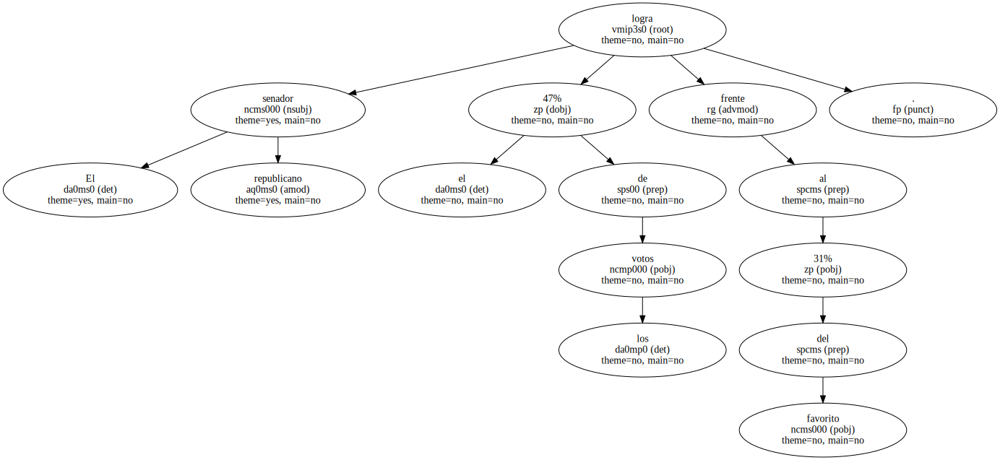El senador por Arizona John McCain asestó ayer un duro golpe al favorito republicano a la Casa Blanca , George W. Bush , al conseguir una amplia victoria en las primarias celebradas en el estado norteamericano de Nueva Hampshire.
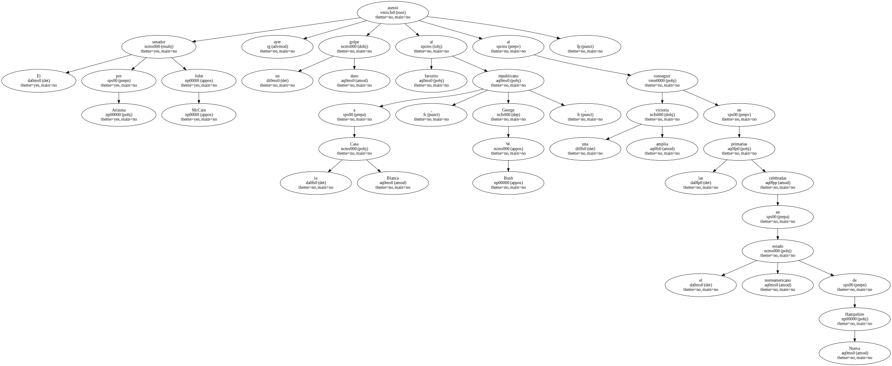Con una cuarta parte de los votos escrutados , McCain se hizo con el 47% de los votos , y Bush , con el 31% , una diferencia muy superior a los 10 puntos que pronosticaban los sondeos la víspera.
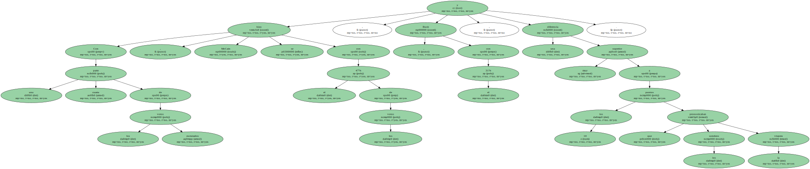El multimillonario Steve Forbes logró el 14%.
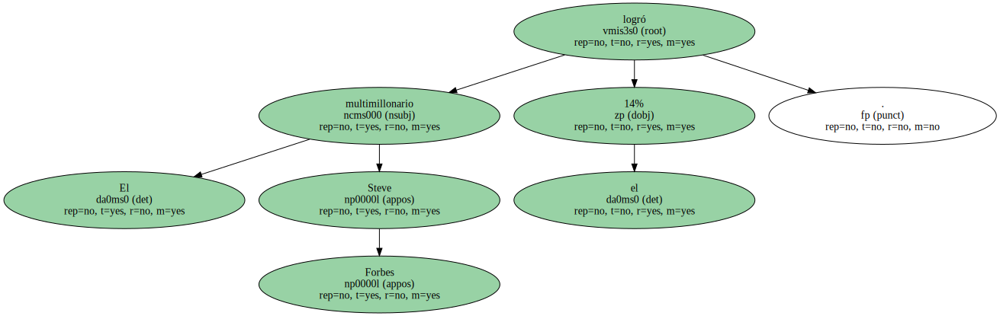En el bando demócrata , la pugna entre el vicepresidente Al Gore y el ex senador Bill Bradley se presentó más igualada , aunque Gore logró el 54% de los votos frente al 46% para Bradley , una diferencia que entraba dentro de los cálculos de Gore.

" No esperaba que la victoria fuera tan grande " , comentó sorprendido el propio McCain , cuyo desafío a la ortodoxia del partido republicano agradó particularmente a los correosos votantes de Nueva Hampshire , famosos por su apoyo a los candidatos que se salen de lo marcado por los dos grandes partidos.

" Es hora de que el partido republicano regrese a sus raíces reformistas " , añadió McCain , cuyo triunfo rompe la sensación de que Bush , gobernador de Tejas e hijo del ex presidente Bush , es el candidato preferido de los republicanos.
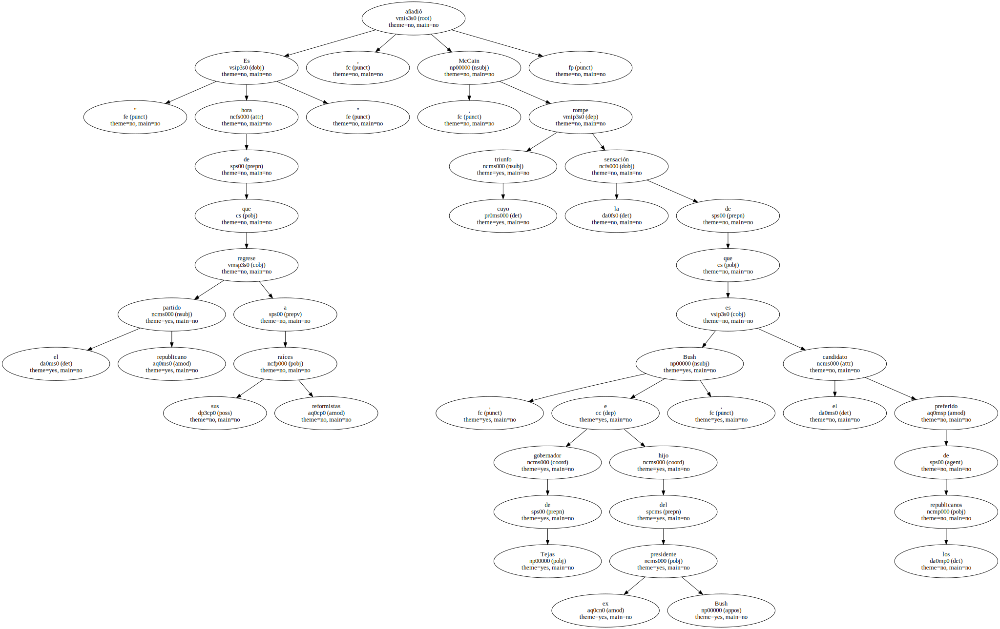En los cuarteles generales de Bush se reaccionó prometiendo una pugna más agresiva en la catarata de primarias que se sucederán en las próximas cinco semanas.
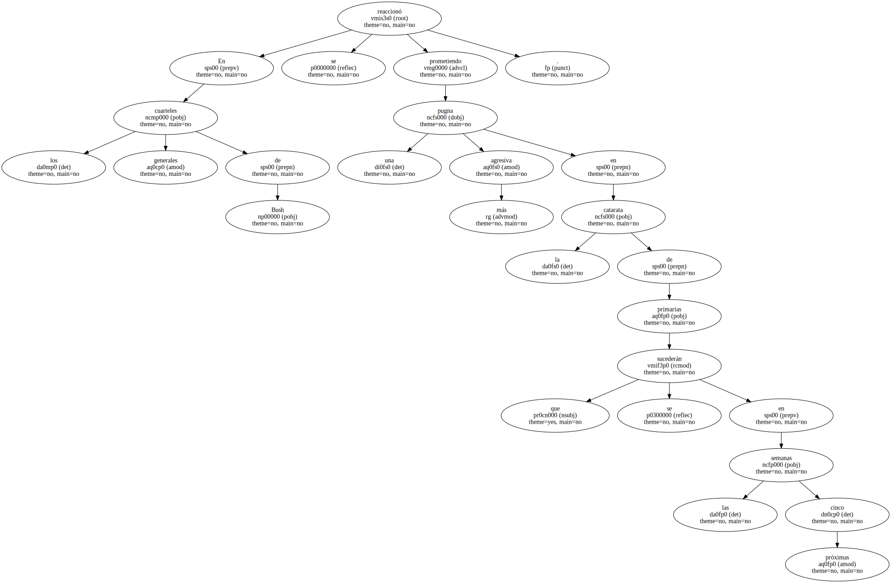Bush está excelentemente preparado para ello , ya que sus fondos electorales son los más cuantiosos de los siete aspirantes a la Casa Blanca y se acercan a los 11.000 millones de pesetas.
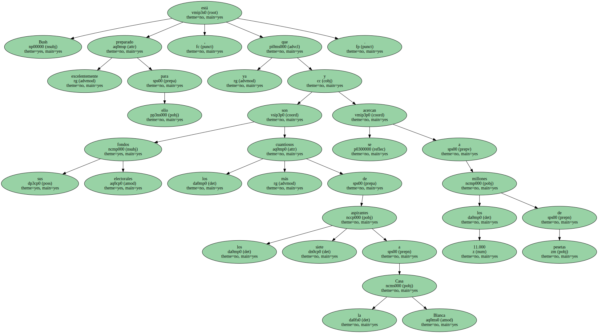Frente a esta ingente suma , los 2.560 millones de pesetas que ha logrado reunir McCain para pagar los enormes gastos de una campaña electoral auguran una lucha muy desigual.
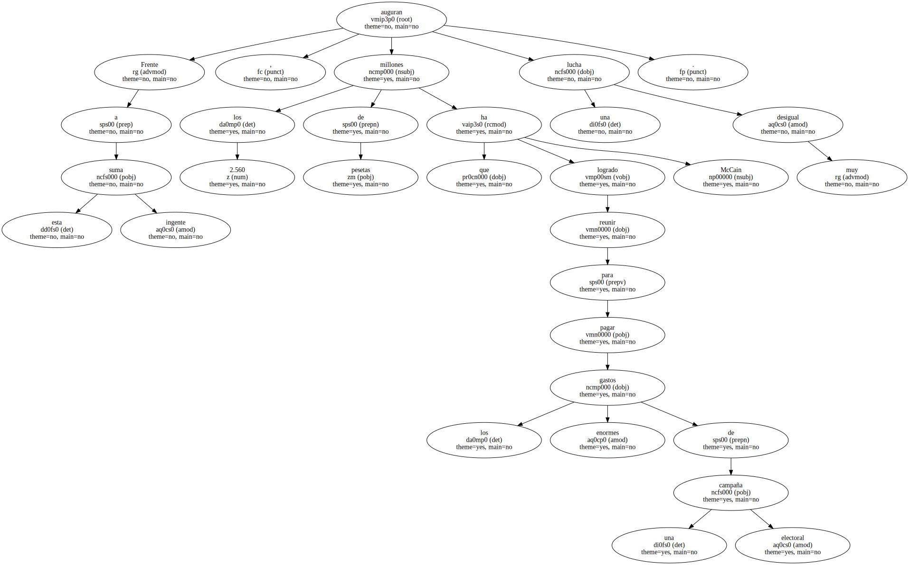En la carrera demócrata , el simple hecho de que Gore no lograse batir fácilmente a Bradley , como vaticinaban los sondeos , fue ya una derrota para el vicepresidente demócrata y heredero político de Bill Clinton.
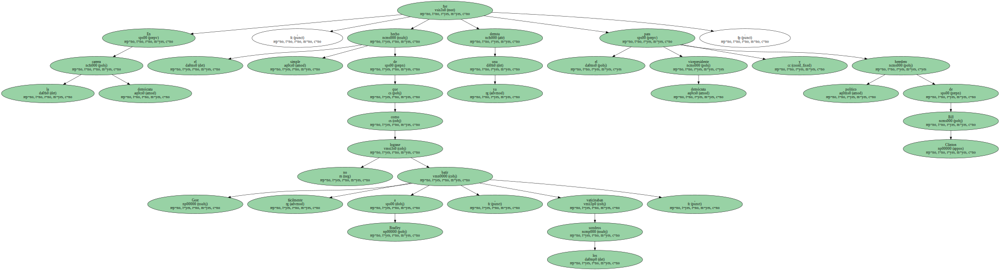Precisamente la estrategia de Bradley para minar a su rival fue esgrimir el espectro del actual presidente , cuestionando la honestidad de su delfín en temas como la reforma de la ley de financiación electoral y el aborto.
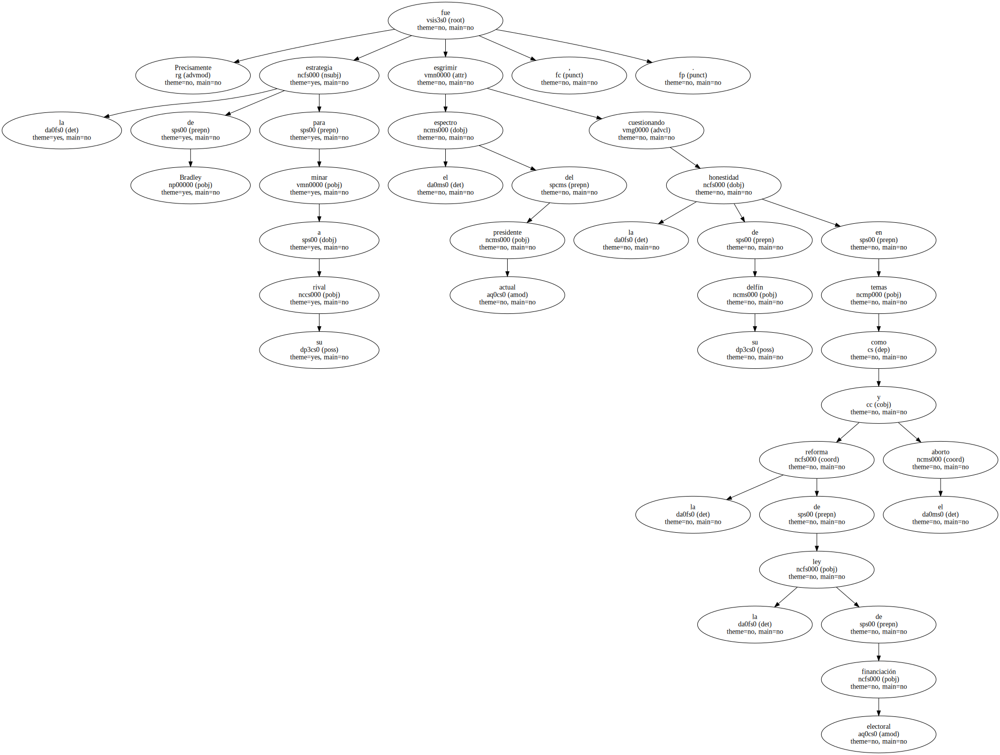Estrategia agresiva Los analistas adelantaron que Gore pudo haberse resentido de la agresividad exhibida por Bradley durante el fin de semana , cuando atacó sin piedad su carácter , y auguraron un aumento de las escaramuzas entre ambos en las próximas contiendas.
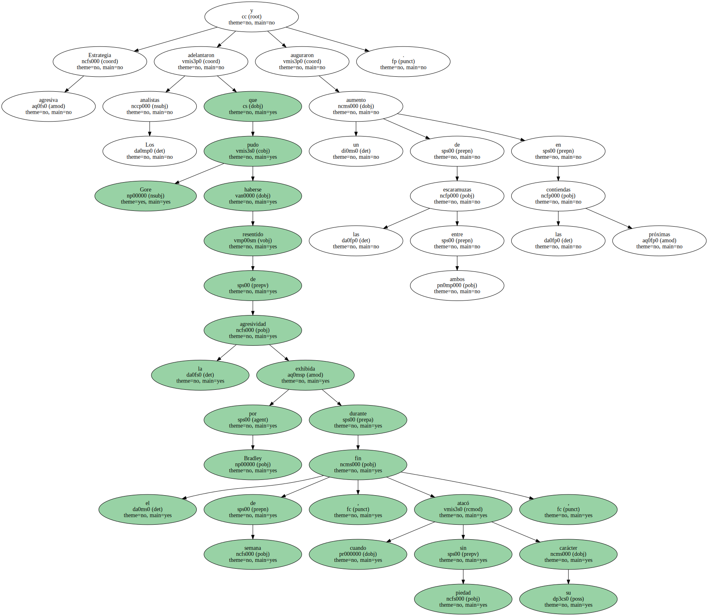Los recuentos iniciales revelaron que Bradley atrajo a un gran volumen de independientes 37% de los votantes de Nueva Hampshire - - , en un récord de asistencia a las urnas que se cifró en más del 80% de todos los inscritos para votar.
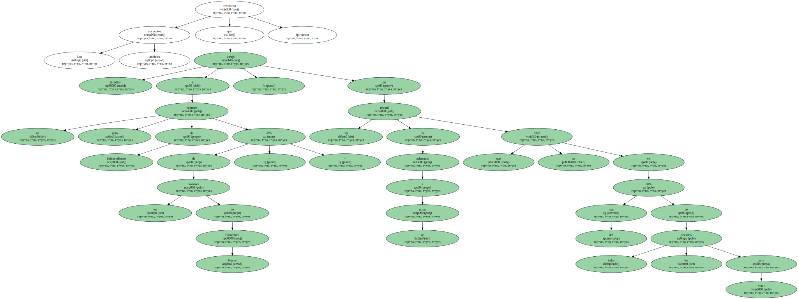